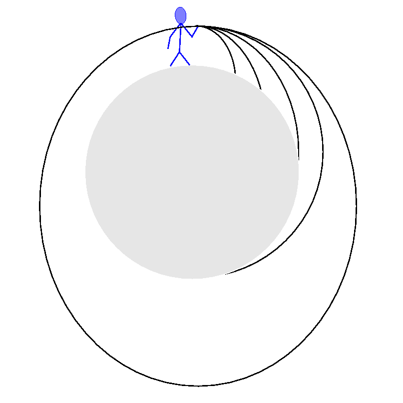

Original by Don Koks, 2003.
In the 1960s, Wernher von Braun put together a series of articles about space flight, some of which were published in Popular Science Monthly. Eventually they were collected and made into the book Space Frontier, (1st ed., Holt, Rinehart and Winston). It's a very readable book, and talks about how rockets work, and flight and safety in space. In one of the articles, von Braun explains why a satellite is able to stay up while in Earth orbit.
He begins the article by asking what would happen if we could throw an object horizontally, but at faster and faster speeds, such as in the picture shown here. "Eventually", he writes, "the curvature of the downward-bent trajectory would become equal to the curvature of the earth". This is almost well and good. (It's not quite right to say that the curvatures of the orbit and Earth's surface are the same, even for circular motion, but this is a minor error compared with what comes next.) The important point is that as the bullet moves faster and faster, a magical speed is reached where the curved Earth drops away from the bullet precisely as fast as the bullet falls to the ground; added to which, the direction of "down" keeps changing.

As a result, the bullet never gets any closer to the ground—it's in orbit. This is actually a marvellous special feature of an inverse square force like gravity; it would not be guaranteed to happen if gravity were not inverse square. In general, orbits are ellipses, and one such is drawn on the left. A picture just like this was originally included by Sir Isaac Newton in his Principia of 1687.After this fine start, von Braun then proceeds to muddy the water. He says that as the bullet is shot at ever faster speeds, "its trajectory will be less deflected because the centrifugal force is increased by its higher speed, and more effectively counteracts the Earth's gravitational pull". At this point, physicists baulk. Centrifugal force? What has that got to do with satellite motion?
Next, von Braun draws a picture of a satellite in Earth orbit. Acting on the satellite are two forces: gravity, pulling the satellite toward Earth, and this centrifugal force, pushing the satellite away. He writes "A circular orbit occurs whenever a small mass, travelling through the gravitational field of a big one, happens to have a speed at which the centrifugal force is precisely strong enough to balance the large body's gravitational pull." And later, "If the balance between gravitational and centrifugal force is not perfect, [...] the small body will describe an elliptical path around the large one."
What would Newton say? He too would draw the forces acting on the satellite, and would then proceed to apply his "force = mass × acceleration"; but first, he'd want to choose an "inertial frame" within which to do this, since his laws only work in inertial frames. An inertial frame is one in which, if we throw a ball, it moves away from us with constant velocity (i.e. constant speed in a straight line). Since this doesn't quite happen on Earth, the frame Newton would choose would be something more all-encompassing, outside of Earth. One good approximation would be the frame of the Solar System, within which the Sun is at rest, and Earth revolves fairly accurately in a circle around it, once a year. An inertial frame like this is presumably what von Braun is using, because anything noninertial won't tie in too well with his picture of Earth plus satellite.
In an inertial frame, if there really were two equal-but-opposite forces on the satellite as von Braun drew them, then the total force on it would be zero. So it would not accelerate; it would move in a straight line with constant speed. Since the orbiting satellite doesn't move in a straight line, neither von Braun's picture nor his explanation are correct.
In reality, nothing holds the Moon up. As Newton's inertial frame analysis predicts, the Moon is completely under gravity's thrall; in other words, it falls, because in such a frame there's only one force on the Moon: gravity. Gravity accelerates it. That doesn't mean its speed must necessarily change, or that it must get closer to Earth (although actually both of these things do ebb and flow slightly during the month, but that's not an important point). If Newton's F = ma is solved for the general case of falling under gravity, the motions that result are lines, circles, ellipses, parabolae, and hyperbolae. In one of those great correspondences between Nature and pure mathematics, these are precisely the curves that result if we take a cone and slice it in any direction.
Even if the Moon's orbit were circular, its direction of travel would still be changing, which is one kind of acceleration. (Remember that acceleration is a change in velocity, meaning that acceleration can change an object's speed, or it can change merely the direction of motion, or both.) The Moon, and every other satellite, fall just as surely as an apple does when pulled down by gravity. Whereas the apple changes its speed but not its direction of motion, the Moon changes its direction of motion, but not its speed. The real difference between a satellite and an apple falling from a tree, is that for the fast sideways-moving satellite, the direction of "down" is always changing. But the satellite really is falling, and in fact a near-Earth satellite has almost the same acceleration that a falling apple has. If it's above us now, then in about 45 minutes, for a low satellite, it will have fallen so far down that it'll be on the other side of Earth. By then, the direction of down has reversed completely, and the satellite will again fall down for those who live on the opposite side of Earth, returning to us about 90 minutes after we first saw it. Of course, it never hits Earth because of its ever-present sideways motion. The Moon is much farther away where gravity is weaker, so it takes fully two weeks to fall to the other side of Earth.
So why was the concept of centrifugal force invented?
Centrifugal force was invented to allow us to do proper bookkeeping in a noninertial frame, if we insist on using such a frame to work with Newton's laws (and there might be a good reason for wanting to do so). For a simple example of a noninertial frame, consider what happens when you stand in a bus while the driver brakes. For a few moments, every passenger moves forward. The heavier ones feel a strong force that acts on their large mass, while the lighter ones feel a small force acting on their small mass. All feel the same acceleration. This is called a fictitious force, because it's a force that we invoke to explain why we are suddenly accelerated forward. In the (almost) inertial frame of the outside street, this force doesn't exist. The real force there is a single simple one provided by the friction of the ground on the bus tyres, and transmitted through its brakes to its body. This force accelerates the bus backwards—or, to use the more intuitive expression, decelerates the bus. Unless the passengers hang on, they will continue to move forwards until something inside the bus stops them.
Depending on our choice of frame then, there are two forces to choose from when analysing why the passengers are impelled forward:
In the inertial street frame, there is a braking force that pushes backwards on the bus. This is a bona-fide force, in the sense that it's produced in an inertial frame. It acts on the bus only, so unless we hold on, we'll continue to move forward at constant velocity.
In the noninertial frame of the decelerating bus, the force is a mysterious force that acts on us, but not on the bus. It pushes us forwards, and has a strength that is proportional to how massive we are. Our fellow passenger, twice as massive as ourself, will feel twice as much force, but by F = ma, both we and they will feel the same acceleration. This is certainly a more complicated force to explain than the simple one that pushes on the bus in the street frame. Such a mass-dependent force is an indicator that something is awry—we have chosen to use a noninertial frame, and if we demand Newton's laws to hold in such a frame, then we'll have to invoke this fictitious force.
It's worth pointing out that although the force impelling us forward in the bus's frame when the brakes are applied is conventionally called fictitious, it is real enough for the bus passengers! It might be a less natural force to use from a fundamental point of view of explaining why Nature works in the way that she does, but that does not mean that a fictitious force is not "real", that it is some kind of make-believe thing that will go away if we concentrate hard enough. The word "fictitious" merely means that the force vanishes when we shift our frame of reference to one that is inertial, because inertial frames hold a very special position in physics. But as a means of quantifying how the passengers in a bus lurch forward when the brakes are applied, a fictitious force is entirely appropriate and as real as any other—in the frame of the bus. There it must be included in Newton's laws, as all forces must.
Centrifugal force is such a fictitious force, invented purely to balance the books, when we analyse a situation in a rotating frame. Because circular motion involves acceleration (perhaps just a changing direction—not necessarily a changing speed), a rotating frame is also accelerated, just as the bus was. We feel a centrifugal force when the bus goes around a corner. If we made a better choice of frame (say, the almost-inertial street frame), then we'd see the situation for what it is: the bus feels a simple force due to the friction of the road on its tyres, while the passengers feel no force at all—until their natural constant velocity motion gets checked by the body of the bus, which pushes on them to get them around the corner along with the bus. But in the noninertial bus frame, there is a strange force that pushes sideways on the passengers until they press against the inside wall of the bus.
So centrifugal force is a fictitious force invoked to make Newton's laws work in a rotating frame. (For that matter, Coriolis force is another fictitious force that we introduce in Earth's gently rotating frame, to explain why large air masses, moving due to pressure differences, feel forces that work to create winds.) Centrifugal force has absolutely nothing at all to do with the motion of a satellite, as long as we do our calculations within an inertial frame. If we choose a noninertial frame, then we'll certainly need to invoke a centrifugal force. But a noninertial frame isn't fundamental—it has no use for explaining why the satellite orbits Earth.
A good intuitive case in point is that of geosynchronous satellites. These are placed in orbit about 36,000 km above Earth's equator, at just the right height that they orbit Earth in one day. Since Earth rotates once in the same period, these satellites always hover above the same point on its surface. From an inertial frame (say, the Solar System), there is nothing special about geosynchronous satellites. They feel only gravity, and respond to it by falling, while retaining the sideways motion given to them when they were initially released from the rocket that sent them up. But from the point of view of someone standing on Earth's surface and defining himself to be at rest, a geosynchronous satellite just hovers in one place, as if it were somehow overcoming the gravity force that acts upon it. Remember though, that the rotating Earth is a noninertial frame, and we will need to invoke a centrifugal force to make Newton's F = ma work. So we can certainly say that in this unnatural frame there is a centrifugal force holding the satellite up. But it's precisely because noninertial frames are so unnatural, that we are forced into inventing this fictitious force to keep the books balanced. If we want to calculate things in this frame, then that's fine. Keep the centrifugal force, and everything will work out right. And for whatever reason, it might well be useful to do our calculations in this noninertial frame. But to explain why the satellite stays up, we need to choose an inertial frame. In that frame, the centrifugal force vanishes, the satellite no longer stays up, and the question evaporates.
A few lines up, I wrote that the force we feel when the bus is braking is weird, in that its strength is proportional to our own mass. But what about gravity? That also has a strength that is proportional to our mass! Could gravity be a fictitious force too?
Yes, that's exactly how gravity is viewed these days. This is the content of Einstein's General theory of Relativity. Einstein conjectured that perhaps we've been looking at things in the wrong way. Newton viewed the orbit of a satellite, or the parabolic flight of a projectile, or the fall of an apple, to be complicated motions caused by the action of this mysterious force called gravity. But Einstein turned the problem on its head, and decided that satellites, projectiles, and apples are all following a motion that is as simple as any motion can be, provided they are viewed on the stage of a curved spacetime. The ones whose motion through spacetime is very complicated are ourselves, standing on Earth's surface.
This change of view wasn't just made for the sake of a different viewpoint. Einstein's change in viewpoint enabled him to make predictions that differ to corresponding ones made by Newton's theory. And it is Einstein's predictions that have been verified experimentally to a very high accuracy.
So gravity can be treated as a fictitious force. But it's a sort of "higher order" fictitious force when compared to the everyday one we experience in a bus: unlike the very uniform force that pushes us forward in a braking bus, gravity can't be made to completely vanish by a simple change of frame. Added to that, the mathematics of curved spacetimes is more complicated than using F = ma. So for everyday use, it's completely sufficient to treat gravity as a good old bona-fide force, just like the mechanics books tell us to do.
And what of the Nazi senior SS officer Wernher von Braun? He is often regarded as the father of modern rocketry and of putting a man on the Moon, even though he took his key ideas from Robert Goddard. The main reason von Braun got rockets to work was his access to huge Nazi funding and slave labour, things that Goddard did not possess, and which von Braun never acknowledged or apologised for. But it's clear from his book above that von Braun didn't understand what a physicist will regard as the first thing about orbital dynamics. His role in the history of the American space programme needs re-evaluating. The scientists who really did understand orbital dynamics would have succeeded in putting men on the Moon even if von Braun had never been enlisted as head of the programme.